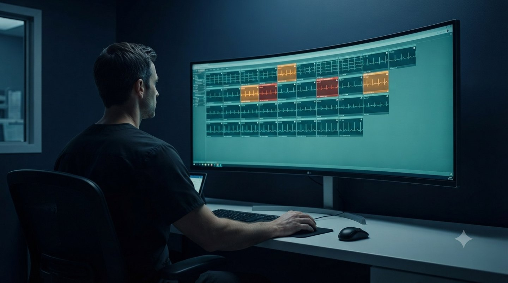
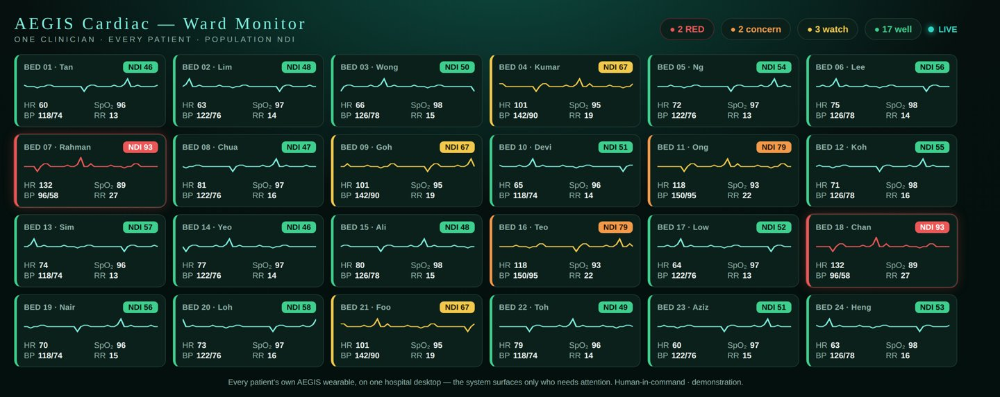
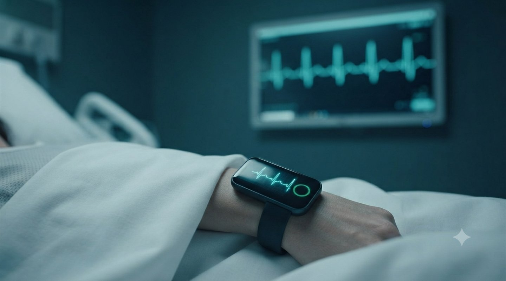

Healthcare · Wearable · Clinical · Full Case Study
AEGIS Clinical — Advanced Cardiac Algorithm & NDI (Non-Dimensional Index)
The AEGIS wearable has two tiers. Lifestyle keeps watch on your own wrist. AEGIS Clinical is the other tier — the Advanced-AI cardiac engine that unlocks on the same device and integrates into the hospital desktop, so one clinician can watch every patient at once on a shared danger scale. It learns each patient’s own normal, reads the earliest electrical sign of ischaemia — the K-wave (J/Osborn) — and places them on the population Cardiac-Ischaemia NDI.
The wearable a patient already owns delivers its stream to the ward’s desktop — no monitor bolted to every bed. One clinician’s reach is multiplied, the cost of watching falls, and the clinician confirms every alert. Augmenting the ward, not replacing it.
Role
Solo — signal features, Advanced-AI engine, dimensionless index, live demo
Datasets
PTB-XL + the full Chapman-Ningbo cohort — 66,951 physician-labelled 12-lead ECGs
Method
Self-learning K-wave engine (SVM / Nu-SVM / SVR family) + untrained population NDI · patient-independent
Headline
~98% on the early ischaemia signature; 96% from a single lead — a watch is enough
Live · the actual app, running on this page
The real AEGIS Clinical app, embedded live — it opens on the moving monitor (ECG, respiration, SpO₂), with the population NDI dial on the second tab. Tap “Launch the live demo” above to run it full-screen.
The advanced algorithm
AEGIS Clinical runs the same engine as the everyday wearable, tuned for the ward. It builds each wearer’s own baseline and keeps adapting — judging a patient against themselves, not an average stranger — so a standing condition (even a pacemaker’s altered rhythm) doesn’t trigger constant false alarms, while a genuinely new departure still breaks through. A dedicated channel reads the K-wave (J/Osborn) and ST-T signature, among the earliest electrical signs of a developing cardiac event, before symptoms are felt.
The clinical dial — a single, transparent number
On top of the sharp detector sits the Cardiac-Ischaemia NDI: an untrained, dimensionless 0–100 number that rises steadily from healthy to unwell and reads the same on any device. Four colours — green, amber, orange, red — turn it into something a clinician or patient can act on at a glance. Transparent by design, not a black box: the number a ward can trust and compare across patients.
How well it works — measured, not claimed
Every figure below is measured on physician-labelled public ECGs, always tested on patients the engine never trained on (patient-independent).
What it detects
Independent test
Accuracy
The early ischaemia (ST-T) signature
Chapman-Ningbo (45,152 patients)
~98%
Rhythm disease
Chapman-Ningbo
~99%
From a single lead — a watch is enough
Chapman-Ningbo
96%
On a completely unseen dataset (trained on one, tested on the other)
PTB-XL ↔ Chapman
~87%
Across age and sex subgroups (no group left behind)
Chapman-Ningbo
92–98%
Percentages are detection accuracy and catch-rates; figures hold across two independent datasets and degrade gracefully under sensor noise. A screening & early-warning aid, not a certified device.
Integrates into the hospital desktop
This is where AEGIS Clinical leaves the lifestyle wearable behind. The device the patient already wears streams to a hospital desktop, where a single clinician monitors every patient’s heart from one screen — no monitor at every bed, no new hardware. It surfaces only the patients who drift into danger, ranked on the population NDI, so attention goes where it matters.

One clinician, the whole ward — the patient’s own wearable on the hospital desktop.

What she watches: every in-patient’s live values and NDI on one screen — the system surfaces only who needs her.
Augmenting, not replacing. One engine drives two faces from one signal source — a consumer wearable and a clinician-grade population monitor. Fewer boxes per bed, the same clinical picture, the human in command of every decision.
One device — wrist to ward, and home again
The clinical value rides on the same watch the patient wears at home. Admitted, it becomes their in-hospital monitor; discharged, it keeps watching, so care continues beyond the walls on one continuous record.

Wrist to ward: the watch’s own trace mirrored on the ward monitor — one device, one continuous record.
Why “Clinical”, not just cardiac
AEGIS Clinical is built as a multi-parameter platform. The heart is the first sense — the same device is designed to take more. Next on the roadmap: a non-invasive infrared glucose sensor that adds continuous blood-glucose monitoring, so one wearable watches the heart and metabolic risk together, on one clinical danger scale. (Glucose sensing is a planned integration — designed for, not yet validated here.)
Stated plainly, so it stays credible. A feasibility demonstration of the engine, validated on open physician-labelled research signals (PTB-XL + Chapman-Ningbo, PhysioNet CC BY 4.0) — not a certified medical device. Clinical features require labelled clinical data and regulatory clearance in each market. It flags; a clinician, and in time a certified pathway, decides. Dedicated to Professor Dhanjoo N. Ghista, whose nondimensional-index lineage this work continues.